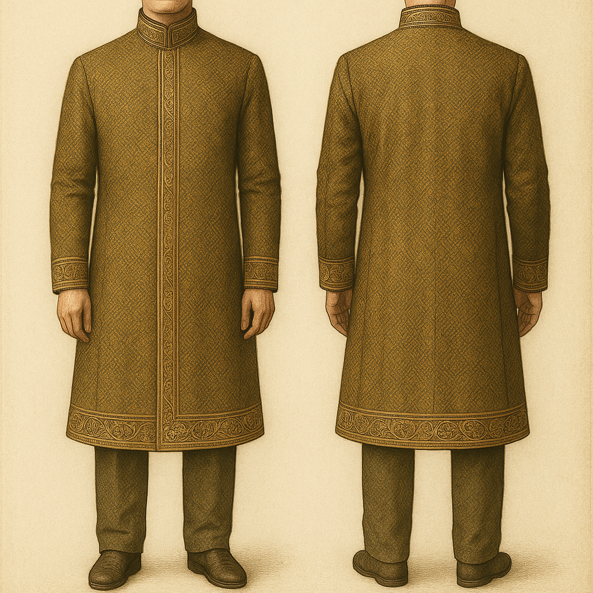

Aspakei
Aspakei
Il Velkoro
Il velkoro è il tradizionale soprabito indossato dai senatori e da altri funzionari di alto rango e rappresenta il prestigio. Il velkoro ha una struttura regale con collo
alto e maniche lunghe ed eleganti. Copre il corpo, mantenendo una presenza dignitosa e imponente. Realizzato con un materiale lussuoso ma resistente, il cappotto è progettato
per essere funzionale e confortevole. I fili vengono intrecciati su tutta la superficie, cambiando i colori a seconda dell'illuminazione.
Motivi delicati e decorati decorano i bordi, i polsini e l'orlo del cappotto. Questi motivi spesso hanno significati simbolici, come rappresentare risultati o affiliazioni.

Il Vimolvesto
È una tunica tipica, lunga e asimmetrica, con tessuto a strati che copre una spalla. Tradizionalmente indossata da studiosi, artisti e intellettuali, il vimolvesto rappresenta saggezza,
creatività e profonda contemplazione. È allo stesso tempo un indumento pratico per lo studio quotidiano e un simbolo di prestigio negli ambienti accademici e artistici.
Il Vimolvesto ha una forma allungata e fluida, che tipicamente arriva fino alle ginocchia o più in basso. La sua caratteristica distintiva è il drappeggio su una spalla, che gli conferisce un aspetto distinto e asimmetrico. È realizzato con materiali leggeri ma consistenti, come lino, seta o misto lana per i climi più freddi. Alcune versioni sono rinforzate con una sottile imbottitura sulle spalle per una maggiore struttura.
Lo Sharfo
Lo Sharfo è un indumento versatile, simile a una sciarpa a strati, che avvolge le braccia e il busto, fornendo sia isolamento che un look semplice ma elegante.
È ampiamente indossato dalla gente comune, dai contadini e dai commercianti agli abitanti delle città, grazie alla sua adattabilità, convenienza e comfort.
È composto da diversi pannelli di tessuto lunghi e morbidi che possono essere avvolti o fissati in vari modi. Non ha una forma fissa, consentendo a chi lo indossa
di regolarlo in base al tempo, all'attività o alle preferenze personali. Alcune versioni hanno piccoli bottoni o lacci per mantenere gli strati in posizione. Molti
includono tasche interne nascoste per trasportare piccoli strumenti, monete o oggetti essenziali di tutti i giorni